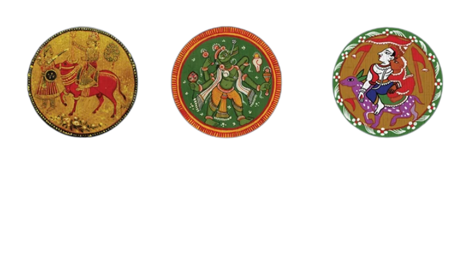
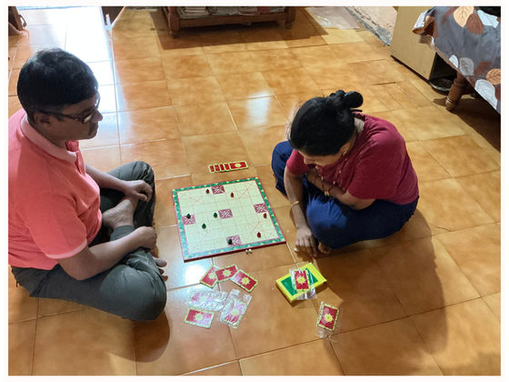

Why this project?
- To revive the traditional Indian board game Chowka Bara by adding a new layer of strategy and surprise through a small set of hand-painted, Ganjifa-inspired cards.
- To blend cultural preservation with today's play, encouraging screen-free social time.
What inspired me
A visit to a heritage museum in Manipal, where I found Sawantwadi-made Ganjifa cards, a beautiful art form from my home state Maharashtra. I wanted to reconnect this forgotten look with a game people can play today.
Ganjifa cards from the Manipal heritage museum, Udupi
Research: Ganjifa
Ganjifa is a traditional card game that came to India from Persia in the 16th century during Mughal rule. The word comes from the Persian “Ganjifeh”, meaning playing cards. Over time, Indian artisans adapted it with local stories, deities and symbols.
Places where Ganjifa cards are made
- Sawantwadi Maharashtra
- Mysore Karnataka
- Bishnupur West Bengal
- Bonkura Odisha
Types of Indian Ganjifa

Research: Chowka Bara
An ancient Indian board game, widely played in Karnataka and close to Pachisi and Ashta Chamma. A game of strategy, chance and movement for 2 to 4 players. Four cowrie shells are used as dice: the number of shells landing mouth side up decides the move.
Traditionally played Chowka Bara boards in Indian households
2 points
Throw the four shells and count the mouths facing up.
Regional variations
- Chauka Bara Kannada
- Ashta Chamma Telugu
- Daayam Tamil
- Champul Marathi
- Kavidi Kali Malayalam
Relevance in the digital age
- Digital detox: a tactile alternative to screens that brings people face to face.
- Mental health: board games can lower stress and feel calming.
- Social skills: turn-taking, cooperation, and coping with winning or losing.
Ideation
I studied Pachisi, Vimanam, Chaupar and Chowka Bara, each with its own layout and flow, to understand symmetry, central convergence and movement paths. I chose Chowka Bara for its cross-shaped layout and familiarity, then added card-based twists and Ganjifa-inspired visuals.
Behind the scenes
From sketching layouts and designing cards to painting tokens and testing gameplay, AshtaChaal came to life through hands-on making and iteration.
Final result
Traditional looks inspired by Ganjifa art with strategic play rooted in Chowka Bara. From the hand-painted board to the action cards, each part aims for a nostalgic yet fresh experience for all ages.
- Hand-painted board
- Chaal Patra (cards)
- Tokens and pawns
- Gameplay and rules card
